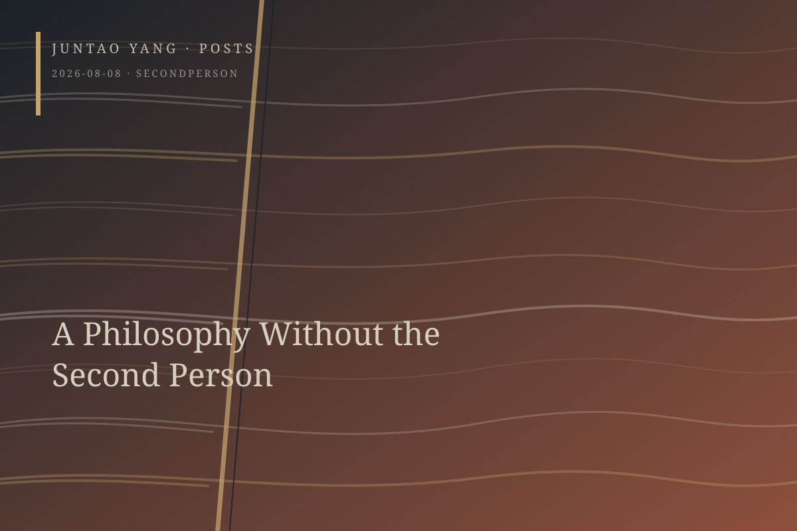

<content>
His rebelliousness, obstinacy, and tenacity are virtues. Yet what belongs to virtue does not readily become political. An ascetic may certainly harbor ambition, but this ambition mistakes the philosopher’s self-sufficiency for publicness. Freedom is always on his lips, but it is the positive freedom of the strong—a monological freedom. Public space is always on his lips, too, but only insofar as he can appear heroically in its arena while exempting himself, in the posture of a philosopher-king, from anyone else’s judgment, wholly indifferent to the enslaved condition of noncitizens.
The Nicomachean Ethics understands friendship through living together. He, however, is someone who fundamentally despises shared life. One half of it—care, vulnerability, the body, and silence—he banishes; the other half—conversation and debate—he commandeers in advance as scenery against which his own correctness can be displayed.
This is a philosophy without the second person. It seeks heroic stature in the agon of the polis, yet everything in it is “I,” “my biceps,” “my Hegel,” and “my positive freedom.” Others are either objects awaiting cognition or an audience; he alone is to become the philosopher-king. Here lies his elective affinity with the podcast: an uninterruptible soliloquy whose very structure cancels the dissenting voice.
</content>
August 8, 2026
A Philosophy Without the Second Person
His rebelliousness, obstinacy, and tenacity may be virtues, but a virtue confined to philosophical self-sufficiency cannot by itself become political.
